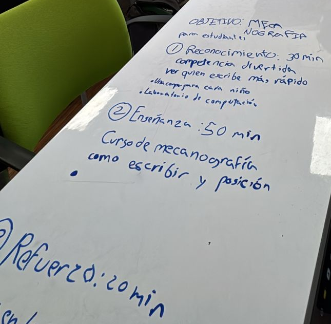

Reflexión integrada | Servicio comunitario y PASEC
Nicolás Tovar
00332988
Ciencias de la Computación
Segundo semestre 2025/2026
Protección Animal Ecuador
Animales en situación de abandono

🔍 Explicación:
El producto escogido para esta sección, es el de una planificación de una clase extraordinaria de mecanografia, dirigida a estudiantes de colegio, con el fin de darles habilidades relevantes de alfabetización informatica y aumentar su empleabilidad en el contexto de la modernidad. Gracias a la elaboración de está planificación, pude comprender el proceso de creación y la metodología de enseñanza, dandome un mayor entendimiento de como proponer ideas y soluciones a distintas problematicas que pudieron aparecer en la organización. Además, me ayudo a analizar las limitaciones que otros grupos sociales tienen en sus instituciones, contrastando con mi propia realidad. Si bien no era aplicable en una relación 1 a 1 en mi organización, igualmente me permitió comprender como proponer ideas y soluciones de forma estructurada dentro de PAE.
Este aprendizaje fue relevante para mi ya que en mi desarrollo profesional, sera especialmente importante la planficación de proyectos, el trabajo colaborativo, y el como presentarlo de manera efectiva a los responsables que pueden ponerla en practica, y el practicar desde este momento estas habilidades profesionales me permitiran estar un paso adelante en mi carrera. Encuentro tambien importante el analisis de las limitaciones de recursos y de tiempo, aspecto que consideraba como importante pero no me parecia especialmente relevante previo a la realización del producto.
Me impactó principalmente en lo profesional, ya que anteriormente, si bien reconocia la importancia de la planificación, este producto, junto a diversas situaciones de mi vida universitaria, me hizo reconocer que su rol es fundamental para el correcto desarrollo de los proyectos que a futuro voy a realizar. También me impacto en lo personal el ver las realidades de las instituciones educativas publicas del pais, y como cosas que tomó por sentado en mi vida diaria, como el acceso a una computadora, no es algo de acceso universal para todos en el pais. Debido a esto, encuentro especialmente relevante la producción del producto escogido, gracias a las enseñanzas, tanto profesionales como de vida, que en conjunto a la clase de PASEC he desarrollado.
Mi definición original de ciudadanía responsable estaba enfocada en las acciones especificas que podian tomar los individuos y las organizaciones para contribuir al bienestar colectivo, apoyandose fuertemente en el marco legal y social.
Si bien sigo manteniendo mi definición original de ciudadanía responsable, considero que era muy amplia y ponia harto peso en las normas sociales, y a travez de la experiencia de servicio comprendi que se debe sustentar también en valores especificos, que cambian de persona a persona.
Personalmente, considero que la ciudadanía responsable se fundamenta en la empatía, la justicia, y la humildad.
Considero que es evidente que el principal cambio entre mi definición original y mi definición actual de ciudadania responsable son los pilares principales en los que se basaban. En la original, consideraba que el codigo etico y moral, asi como las leyes impuestas en la sociedad en la que vivimos eran suficientes para justificar el buen actuar y las acciones que tomabamos como individuos y organizaciones. Sin embargo, esta definición tenia un problema importante, y es que no tomaba en cuenta como la ciudadanía responsable se presentaba en lugar y sociedades donde el estado no se encuentra presente, o es muy pequeño en comparación a las necesidades de la comunidad.
En general, la definición original atribuia la responsabilidad ciudadana a factores externos, pero no tomaba en cuenta los valores humanos intrinsicos que permiten que se origine en un primer lugar. Aparatos como el estado se originan de la colaboración humana en las sociedades primitivas, y considero que se desarrollaron gracias en gran parte a los valores y virtudes que tenemos genéticamente. En especial, considero que la empatia, la justicia, y la humildad son los valores fundamentales para el buen actuar.
La empatia es el valor en el que se sustentan los demas, ya que es la principal cualidad que nos permite analizar nuestras acciones en relación al efecto que tiene en los otros. Una sociedad sin empatía no puede prosperar, ya que el sentido de comunidad no se formaria, y todos actuarián en beneficio propio y de forma egoista.
La justicia existe como la virtud que da balance a la sociedad, y evita el abuso de poder de individuos y organizaciones. Se define en conjunto con todos los participantes activos de la comunidad, se encuentra en constante evolución, y establece que acciones son permitidas y cuales no. Es influenciada por nosotros y nos influencia de igual forma.
Finalmente, la humildad es el valor que da cohesión a la sociedad. Establece que ninguna persona es inherentemente más valiosa o importante que otra, y permite que la justicia se aplique de forma igualitaria, sin discriminación económica o social.
| Valor | ¿Por qué es importante en tu accionar ciudadano? | ¿Lo aplicaste durante tus horas de servicio? ¿cómo? (si no, ¿cómo te diste cuenta de su importancia?) |
|---|---|---|
| Empatía | Considero que la empatía es fundamental para el buen actuar ciudadano, ya que nos permite entender las necesidades y perspectivas de las otras personas, asi como las consecuencias de nuestras acciones. | Lo apliqué durante mi tiempo en PAE, interactuando tanto con los voluntarios, las familias adoptantes, y los perros. Especialmente, considero que gran parte de su apliación fue en comprender las actitudes y necesidades de los perros, especialmente aquellos que sufrieron traumas o tenian acomodadciones especiales. |
| Responsabilidad | La responsabilidad es importante para la ciudadanía responsable, ya que nos permite analizar nuestras acciones y sus impactos, especialmente en los casos donde nuestra acción o inacción tiene consecuencias en las actividades y socios comunitarios de la organización. | En el tiempo en PAE, la responsabilidad fue un pilar fundamental para el desempeño de todas las actividades. Se aplico desde el momento en el que establecimos nuestros horarios de servicio, y continuó siendo importante para completar las actividades asignadas de forma correcta. |
| Integridad | La integridad es significativa para el correcto trabajo comunitario, ya que permite que las acciones que realizamos sean realizadas de forma correcta y honesta, tanto en el desarrollo de las tareas y su finalización. La falta de integridad es un problema importante en las instituciones del pais, y es nuestro deber como ciudadanos no perpetuarlo en nuestas comunidades. | Aplique la integridad no solo en mis acciones en PAE, sino también en el desarrollo de la clase de PASEC. En la organización, la aplique durante el desarrollo de las actividades, reportando el tiempo dedicado a cada tarea de forma honesta y poniendo todo mi esfuerzo en su ejecución. Para el desarrollo de PASEC, me aseguré de reportar correctamente las horas realizadas y mantuve la honestidad academica en todas mis entregas. |
| Compromisos | Indicadores | Acciones concretas |
|---|---|---|
| Como estudiante: Diversificar mi aprendizaje para englobar habilidades y conocimientos de ambitos relevantes para la participación ciudadana. | ✅ Analisis semestral de las habilidades y campos aprendidos que no esten relacionados con mi carrera. ✅ Evaluación constante del conocimiento respecto a areas de interese para la participación ciudadana. ✅ Evaluación por parte de amigos y compañeros sobre mi compromiso con la participación ciudadana. |
|
| Como futuro profesional:Me comprometo a utilizar mi conocimiento en mi carrera para apoyar en la gestión de proyectos de organizaciones comunitarias. | ✅ Análisis de tiempo invertido en actividades comunitarias para cumplir un mínimo semanal ✅ Análisis de habilidades utilizadas para confirmar el uso de habilidades especificas de mi carrera. ✅ Análisis de impacto social de las actividades realizadas y desempeño en la organización. |
|
Los compromisos deberán ser evaluados periódicamente según los indicadores propuestos. (Placeholder - ajusta según tu realidad).
✅ Preguntas obligatorias (respondidas en el video):
1. Reflexión personal: “¿Cómo influyeron esas horas de servicio en mis metas de vida? Definitivamente cambiaron mi brújula: antes soñaba con logros individuales, hoy me visualizo generando equipos y proyectos que devuelvan dignidad a comunidades. Pasé de querer ‘éxito profesional’ a anhelar un legado colectivo.”
2. Reflexión profesional: “Mi preparación profesional se nutrió de humildad y escucha activa. Identifiqué mi fortaleza para conectar con personas diversas, pero también áreas de mejora: debo profundizar en políticas públicas. La experiencia me mostró que técnicamente puedo ser competente, pero la sensibilidad social es el verdadero sello.”
⭐ Preguntas opcionales seleccionadas (2 de ellas):
✔ Opción A: “¿Cómo era mi visión antes del servicio? Pensaba que el voluntariado era una ayuda asistencial básica. Hoy sé que es un intercambio transformador. Espero que en 10 años siga participando en consejos locales porque sembré esa semilla.”
✔ Opción B: “Aprendí sobre la población con la que trabajé (niños y adolescentes): su resiliencia y creatividad asombran. Esto me enseñó que mis acciones profesionales deben proteger sus derechos y promover sus voces, no solo ‘enseñarles’. Me comprometo a que cada proyecto futuro incluya su participación genuina.”